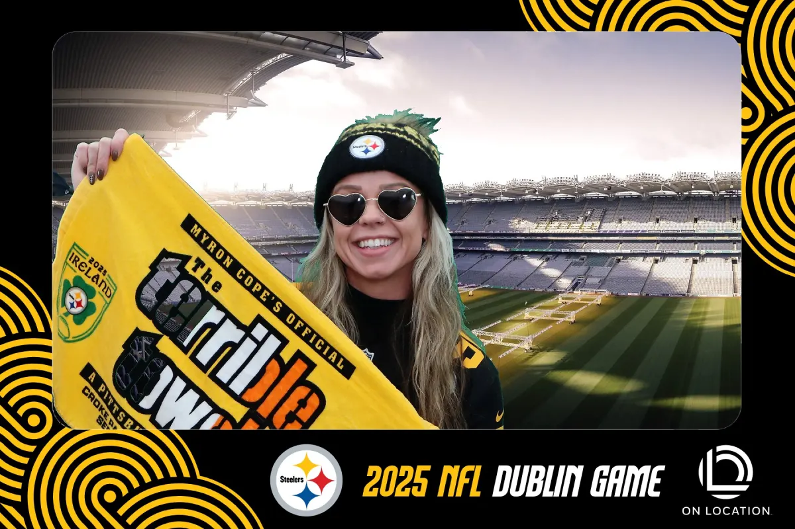
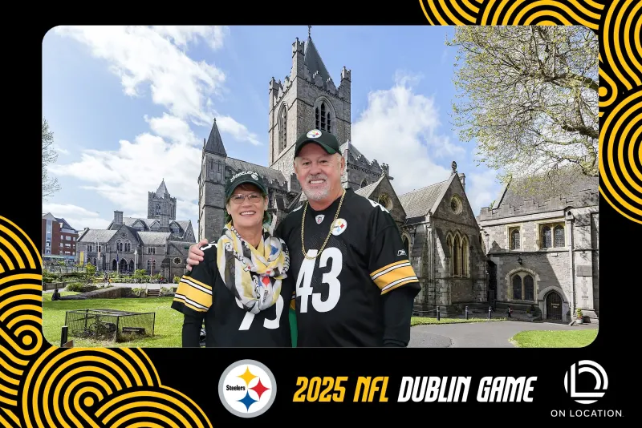
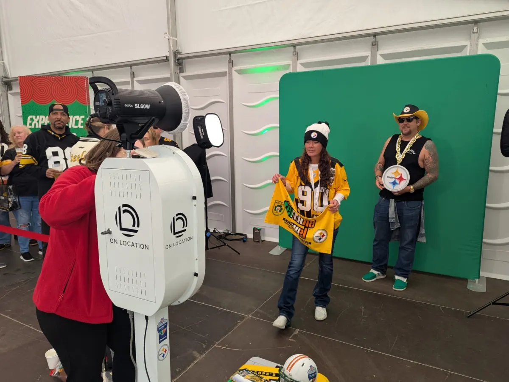

Custom Virtual Backgrounds & Digital Backdrops
Transport your guests anywhere in the world with our green screen photo booth. Custom virtual backgrounds, branded overlays, and instant prints make every photo a unique, shareable experience.
Get A Quote
How It Works
Iconic landmarks, fantasy worlds, branded scenes, or custom designs. If you can imagine it, we can make it a background. Guests choose from up to 16 options on screen.
Our high-end software cleanly removes the green background and composites guests into the scene. The result is sharp, realistic photos that look professionally produced.
Custom frames, logos, sponsor branding, and event hashtags overlaid on every photo. Your brand is front and centre in every image shared online.
Guests receive a branded print within seconds of their photo being taken. A physical keepsake featuring the virtual background and your event branding.
Instant sharing to Instagram, WhatsApp, and TikTok. Every green screen photo posted extends your event reach across social media networks.
Guests select their preferred background from the touchscreen before each shot. Multiple backgrounds keep the experience fresh and encourage repeat visits.
Multiple Virtual Scenes
At the 2025 NFL Dublin Game, we provided green screen photo booths for fans with custom virtual backgrounds featuring iconic Irish landmarks — Croke Park, Christ Church Cathedral, and the Giant's Causeway.
Each guest chose their own background, and every photo was branded with the official NFL Dublin Game and Steelers event graphics. The result? Thousands of branded photos shared across social media.

Behind the Scenes
Our green screen setup uses professional studio lighting and a seamless chroma key backdrop to ensure clean, consistent results with every photo.
We bring everything — the green screen, lighting rigs, camera, printer, and touchscreen kiosk. Setup takes around 30 minutes and we manage everything throughout your event so you can focus on your guests.
Book Green Screen
Perfect For
Conferences, team events, and product launches with branded virtual backgrounds and data capture.
Custom branded virtual scenes for product launches, experiential marketing, and sponsor activations.
Stadium backgrounds, team-themed scenes, and fan engagement at sporting events, matches, and fan zones.
Fantasy locations, themed scenes, and fun backgrounds for birthdays, hen parties, and private celebrations.
Virtual backdrops showcasing your products, office, or brand world at exhibition stands and trade fairs.
Romantic locations, honeymoon destinations, and themed scenes as fun virtual backdrops for wedding guests.
Green Screen Gallery
Nationwide Coverage
We provide green screen photo booth hire with custom virtual backgrounds for all types of events across Ireland.
Common Questions